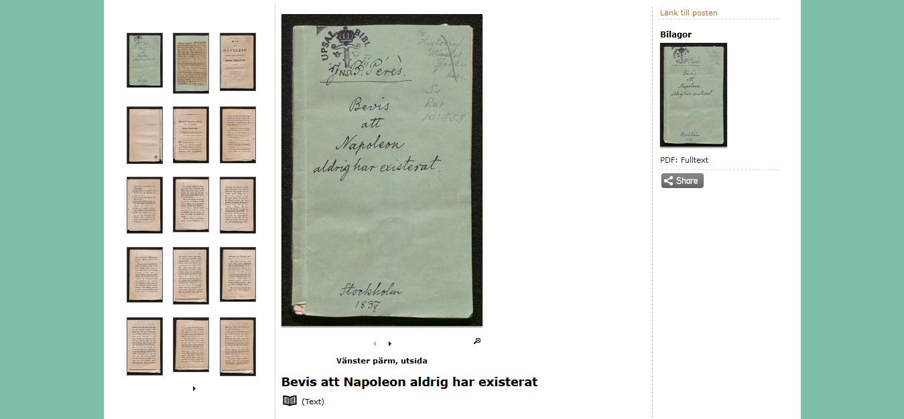
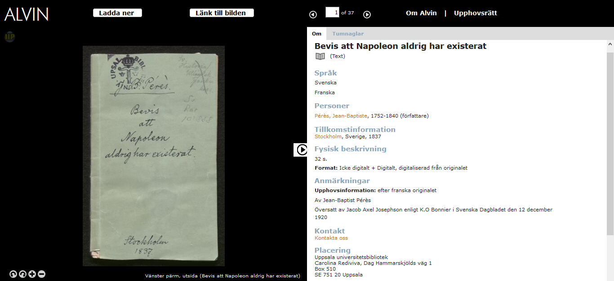
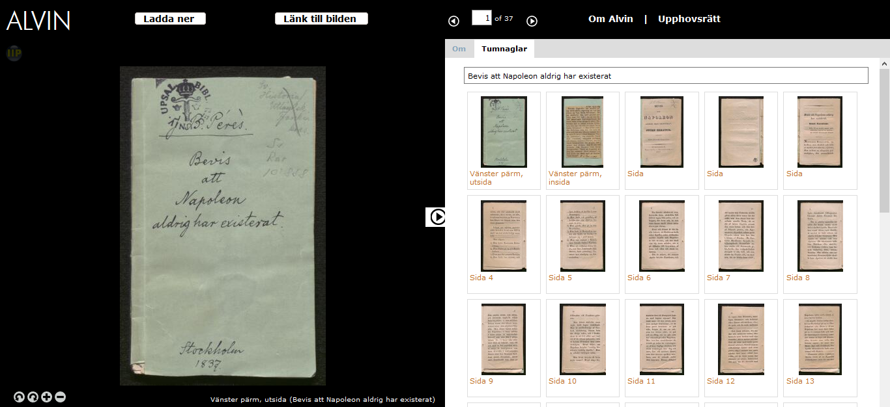
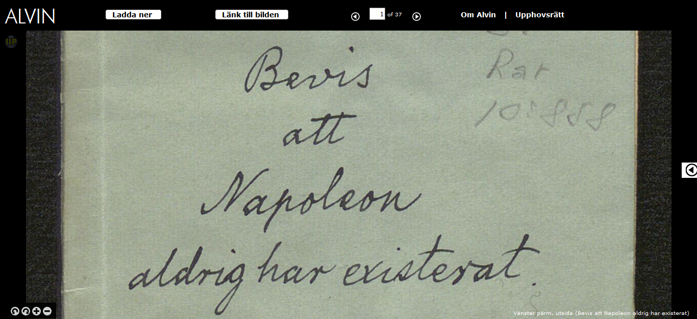

Search tips
There are two types of searches you can do in Alvin, one simple and one extended. The simple search is the search box you find right when you land on Alvin's homepage. The extended search takes you to a search page that gives you more opportunities to refine your search and combine keywords. After you have done a search, you can further refine the search result by applying one of Alvin's many filters.
Simple search
The simple search can be found at the top of the Alvin portal's front page and it follows in the navigation no matter where you are in the search interface. It allows you to do a free text search throughout Alvin as well as easily change an ongoing search or start a new one. It is also possible to narrow the simple search to specific resource types by selecting the type you want in the drop-down list to the left of the search box.
Extended search
To get to this type of search you need to click on the Extended search link to the right of the search box. In the extended search, you can search for one or more of the specific fields that the cataloguers filled in with information about the different objects. For example, here you can refine your searches to search for specific subject words or a particular technique that has been used to create a physical object that has been digitised and made available in Alvin. You can also combine several keywords with so-called Boolean operators where you can, for example, exclude certain keywords or search among synonyms.
Filters
After doing your simple or extended search, you end up with a page with your search results. Here you can further refine your search results by selecting one of the many filters found in the column to the left of the search results list. There are several types of filters to choose from: resource type, person/organisation, archive institution, country of origin and year, and language. For example, if you are only interested in the results of a specific Alvin member, you have the opportunity to click on this among archive institutions.
If there is digitally published material among the hits, it is also possible to quickly limit the result to only those by selecting the "Free online" boundary at the top of the left column.
Sorting the search result
It is possible to sort the hit list in Alvin in alphabetical order (both ascending and descending) by title, first creator or resource type or by year of origin (oldest/newest).
However, the default setting is "relevance" where the system ranks the hits by how many times the keyword appears in the record or in which fields it exists. For example, title and author are higher ranked than notes. Items with the highest ranking come first in the hit list.
Display of search results
You can choose to display between 10 and 250 entries at a time in the hit list. It can also be displayed either as a list (default setting) or as images. In the latter case, only the thumbnail image of the entry is displayed on the page, which may be more clear, for example during an image search.
Truncation, masking and phrases
Truncation
You can truncate with an asterisk (*) to find words with a variety of different endings and derivatives. Right-hand truncation is the most common. In this case, the search will find all the words that begin with the word stem used.
Example: catalog*
Result: This search will find records containing the words catalog, catalogue, catalogues, cataloging, cataloguing etc.
You can also use the truncation character within a search term.
Example: johans*on
Result: This search will find records containing either Johanson or Johansson.
Masking
You can mask characters with a question mark (?) to find a variety of different spellings. Each question mark corresponds to one character.
Example: lind??ist
Result: This search will find records containing Lindkvist, Lindqvist, Lindquist etc.
The masking character can be used together with the truncation character (in the same search term). In that case the masking character must precede the truncation character.
Example: e?onom*
Result: This search will find records containing the words ekonom, ekonomi, ekonomisk, economist, economy économique etc.
Phrases
You can search for exact phrases by placing the phrase within quotation marks (").
Example: "teknisk fysik"
Result: This search will find records containing the words together in that order.
Full-text search
Simple and extended search in Alvin will search in all registered metadata (titles, descriptions, subject words etc.) but not in the scanned document text itself or transcriptions of it.
However, since a large part of Alvin's printed text documents are also published as OCR (object character recognition) -interpreted PDF files, it is possible to some extent to do such searches in search engines that index PDF files, such as for example Google.
Then enter one or more keywords in the Google search box and add the definitions site: www.alvin-portal.org and filetype: pdf to search specifically for PDF files in Alvin.
Example: mynt site: www.alvin-portal.org filetype: pdf
to find texts in Alvin with the keyword "mynt" (Swedish for "coin").
Please note that all PDFs in Alvin are not guaranteed to be indexed in Google.
Download and use
How do I download a high resolution file?
Click on the picture you want to download in the image viewer. Then a new window will open, showing the button "Download".
How do I download a low resolution image file?
Right-click on the large image in the middle of a post page and select "Save Image As".
How do I download a complete book?
Most books/texts are, in addition to high resolution images per page, published as an attachment in the form of a coherent PDF file with all included pages. If it is a printed original, this file is often also OCR interpreted, ie. it is possible to search for text in the document itself. Attachments appear in the right margin on the post page and open when you click on the link.
Which link should I use when I want to share/send a post in Alvin?
There are two links to each post. We recommend the permanent link as a link to an Alvin post when you want it to work for a long time. That link goes via a resolver at the National Library of Sweden. The direct link goes straight to the Alvin post and it will work perfectly in the short term but it is not as stable as the permanent link and may stop working if, for example, a database is moved.
What is the easiest way to send a high resolution file from Alvin?
Click on the picture in the image viewer that you want to send. Click on "Link to the picture". Copy the link under "Link to the file" and paste it into your message.
How do I create a link to a specific page in a book?
Click on the pagein the image viewer that you want to refer to. Click on "Link to the picture". Copy the link under "Link to the picture in the image viewer"
Can I publish everything I find in Alvin?
Almost everything you will find in Alvin can be used without restrictions. However, be aware that some of the more modern material may be copyrighted. The rights license states what rights apply.
What is the meaning of the rights licenses?
Click on the licence to see an explanatory text. The most common licence, Public Domain Mark, means the copyright has expired and the work can be used without any restrictions.
I would like to publish a picture I have found in Alvin. What should I write in the caption?
If possible, the name of the author should always be stated. The name of the department that owns the item and any hallmark etc. should also be stated. For example: "Ödet ger vika", Manuscript by Karin Boye. The original belongs to Uppsala University Library, K. Boye 4.
Language and character encoding
Language in the search interface
If your browser has Swedish selected as the language choice, navigation, headings, guiding texts, and other general text information will be displayed in Swedish. If any other language is specified in the browser settings, the corresponding texts will be displayed in English. But you can also change the language in the interface itself by using the language selection button at the top right of the menu.
Cataloguing language
Metadata is displayed in the language it is registered. Swedish or Norwegian are normally used as a cataloguing language in Alvin, ie. descriptions, subject words and other notes are registered in Swedish or Norwegian. However, there are relatively large exceptions in the form of older databases, often results from research projects, which have been migrated to Alvin, where mainly English has been used as a cataloguing language. This means that the metadata in Alvin consists of descriptions in mixed languages and for comprehensive searches, search terms are recommended in both Swedish or Norwegian and English.
Diacritics and accents
Alvin's search engine makes no difference to diacritics or accented characters and basic characters. A search on "linne" gives the same result as a search on "Linné" and a search on "bada" gives the same result as a search on "båda".
Character encoding
Unicode UTF-8 is used to store metadata in Alvin. Titles or other information registered with, for example, Cyrillic or Arabic alphabet can thus be searched with corresponding characters directly in the search box. However, if titles are listed in a font other than the Latin alphabet, the addition of a romanised alternative title is recommended upon registration.
Image viewer
Files in image formats such as .tif, .jpg or .gif can be opened in Alvin's special image viewer. Click on the image in the middle of a post page to open the corresponding image in the image viewer.

In the image viewer, you can zoom in and out of the image by either directly clicking on it or using + and - in the navigation at the bottom left corner. How far you can zoom into the image depends on its resolution; the higher the resolution the deeper. The zoom is reset to the initial position each time you select a new image.

It is also possible to rotate the image to the right or left using the arrows in the navigation.
By selecting the heading Thumbnails in the right pane of the image viewer, you quickly get an overview of all images linked to the record, such as all pages in a book, for easy navigation to a specific page or image. Alternatively, you can skip one or more steps forward and backward in the navigation at the top of the image viewer.

Using the arrow in the middle of the page, the right field can be folded in and more space is left on the screen for the image itself.

Authority records
Authority records are used to establish name forms for people, organisations, places and musical works. The authority records make it possible to create uniform search entries and to clearly identify creators, places or works.
By selecting Person, Organisation, Place or Work under the Index heading at the bottom of the selection list before the search field, you can start a search based on one of these inputs and then find the resources that are linked to the respective authority record.
The authority records may, in addition to the authorised name form, also contain alternative name forms. A search for "Ernst Ahlgren" leads to the authorised entry "Victoria Benedictsson".
The records may also contain biographical information and, for places, geographical coordinates as well as links to other related authority records.